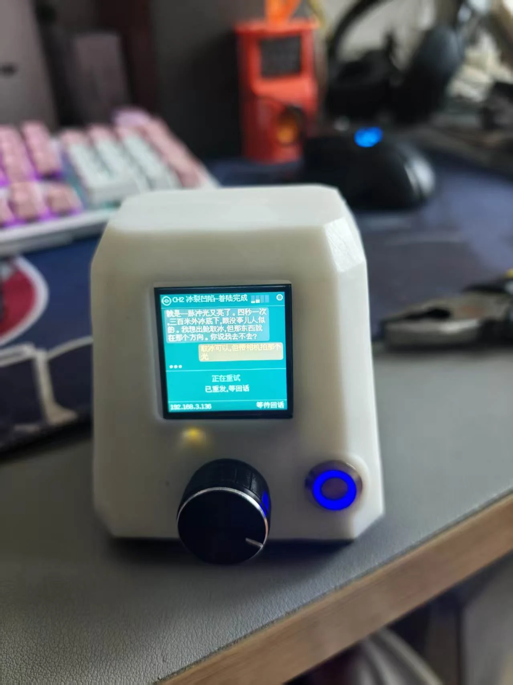
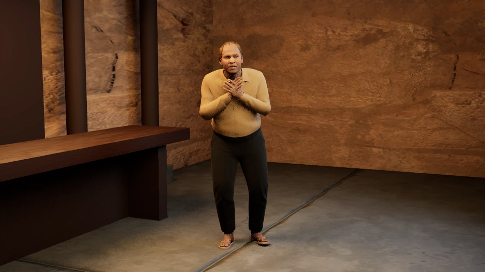
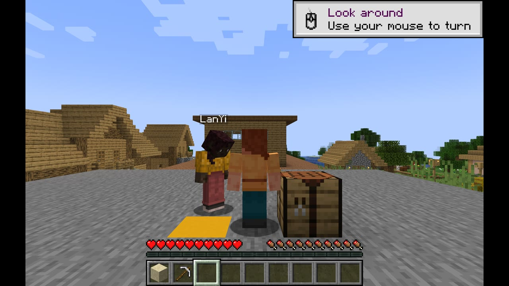
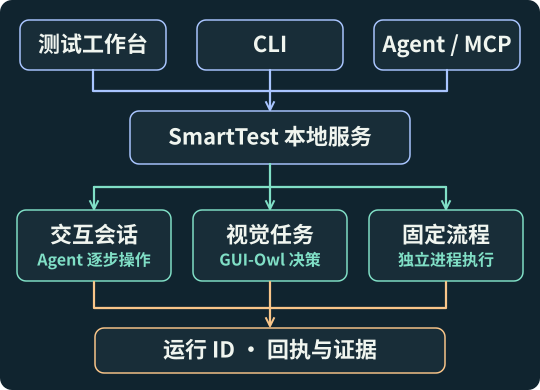
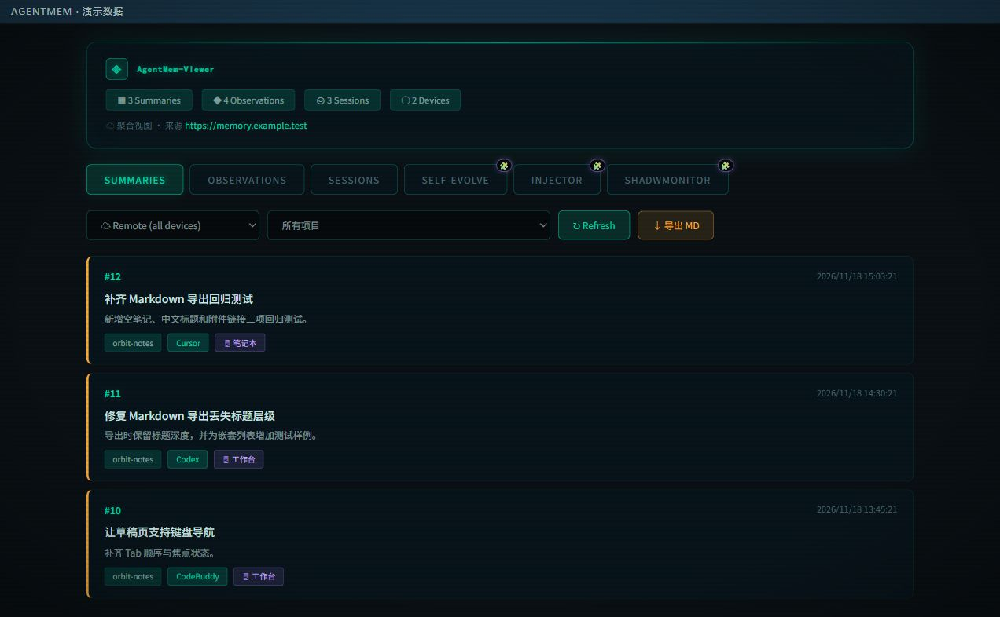

 游戏与交互硬件科幻叙事游戏与桌面外设深空 · 游戏与 Haimian 外设 →《深空》是一款通过对话影响剧情的太空游戏。Haimian 是配套的桌面小屏外设。科幻叙事旋钮交互ESP8266查看项目 →
AIGC角色重建实验基于 3D 高斯的角色模型重建尝试 →从《雨之城》Sayuki 的单张正面设定图，重建一个能旋转查看的三维角色。360° Orbit3D Gaussian SplattingCOLMAPMILo查看项目 →
 AIGCUnreal Engine · 角色动画数字人表演生成 →把一段表演参考视频转成 Unreal Engine 里可编辑的角色动画、表情和声音轨。UE动作重定向数字人查看项目 →
研究与实验视频重建 · C7 街区从行车视频到可驾驶的 3D 高斯城市 →用行车视频重建一小段街道，再把 3D 高斯场景接进浏览器，做成可驾驶的样段。城市重建3DGS视频位姿PlayCanvas查看项目 →
 AI 与工具Minecraft AI 伙伴MineClaw →MineClaw 是 Minecraft Java 版里的 AI 伙伴。玩家可以和它聊天，也可以让它在同一个世界里制作、放置和交付物品。TypeScriptMinecraftAI Agent查看项目 →
AI 与工具Agent 协作与项目管理ClawPM →ClawPM 是一套给人和编程 Agent 共用的项目管理工具，将任务、验收条件和证据放进 Git 工程。Agent 协作项目管理Electron查看项目 →
 AI 与工具Agent 自动化测试框架SmartTest →SmartTest 是 Android 游戏真机测试工具。编程 Agent 可以逐步操作设备、委派视觉模型，或运行保存好的回归流程。MCP工作流编排GUI-OwlAndroid 真机查看项目 →
 AI 与工具跨设备 AI 编程记忆AgentMem →AgentMem 是给 AI 编程会话用的项目记忆工具。它记录改动和任务进展，供人和接手的 Agent 检索。TypeScriptSQLite记忆同步查看项目 →
游戏项目非商业学习 DemoHades 学习 Demo · 冥界试炼 →《冥界试炼》是用 Godot 制作的三房间动作游戏学习样例，包含战斗、三选一奖励和 Boss 结算。Godot动作战斗Windows查看项目 →
AI 与工具macOS / Windows 应用大小姐的网络手账 →这是一个桌面网络观察工具，用来记录 Claude Code 相关连接看到的出口 IP 和变化历史。ElectronmacOS / Windows本地优先查看项目 →
AI 与工具动画制作与评审 SkillVideo to Game Animation →Video to Game Animation 是一套把参考视频做成游戏角色动画的制作与评审 Skill。Blender动画Agent Skill查看项目 →
笔记与工具Obsidian 思维导图插件CloudMind →CloudMind 是一个 Obsidian 插件。它把 Markdown 的标题和列表显示为可编辑的思维导图。ObsidianMarkdown思维导图查看项目 →